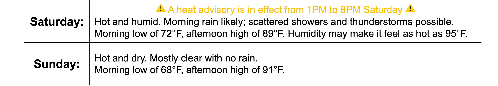
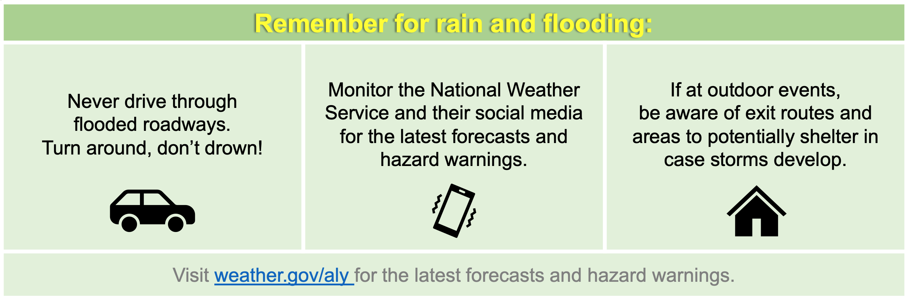

Active Weather for Independence Day Weekend
School Forecast
through Friday July 12th
Last updated: 4:45PM Friday July 5, 2024
| 0% (Nope) |
|---|
| 0% (Nope) |
|---|
| 0% (Nope) |
|---|
___________________
4:45PM Friday:
July 4th may have been yesterday, but local Independece Day celebrations are continuing into this weekend. From fireworks in Windham to the parade in Phoneicia,
this weekend will provide plenty of opportunities to get outside and enjoy our Hudson Valley communities. That being said, hot temperatures and possible storms will
result in active weather this weekend that should be noted as you make your personal plans.
The Forecast:
a heat advisory is in effect for Eastern Ulster County until 8PM Saturday.

As of 3PM, current radar reveals a weather system to our west, near Michigan. Radar, satellite, and analysis from the Weather Prediction Center currently indicate that a cold front associated with this weather system is triggering a sprawling arc of storms that currently extends from Michigan, into the southeastern states, and back across Texas. Over the next 24 hours, the front will approach our region. This will channel a southerly airflow ahead of the front leading to increased moisture on Saturday. This is evident through dewpoints that will increase to the mid-70s and precipital water values increasing to just over 2 inches, these values are higher than 99% of all July days. This is all indicative of moist, muggy air.
The increased moisture will result in the potential for rain and hazardous heat on Saturday. Both computer modeling and extrapolation suggest that the moisture associated with the
storm will bring us rain tomorrow morning. The most likely timing for any precipitation will be between 4AM and 9AM. Steady rain is likely during this time, followed by a chance of
scattered showers and thunderstorms throughout the afternoon. Rainfall totals of 0.25 to 0.50 inches are likley with isolated higher amounts where stronger storms develop. At this
time, the Storm Prediction Center currently does not highlight the development of severe thunderstorms on Saturday. However, high resolution computer models, including the 18z HRRR,
depict MLCAPE values of up to 1500 and 0-6km sheer of up to 40 mph. This suggests that isolated thunderstorms could become strong Saturday afternoon.
The increased moisture will also combine with warm temperatures to create dangerous heat indexes. Temperatures in the upper 80s are anticiated for tomorrow. The latest output from
the National Blend of models currently suggests a 56% chance of tomorrow's maximum being greater than or equal to 88 degrees at the Dutchess County airport. The 25th and 75th
percentile temperature values for tomorrow are 86 and 91 degrees. The combination of temperatures in the upper-80s and 18z HRRR projected dewpoints in the mid-70s would make it
feel like temperatures are in the mid-90s Saturday afternoon. By Saturday night, the frontal system pumping all the moisture into our region will exit. This will allow temperatures
to drop down to the upper-60s Saturday night and allow for slightly drier air on Sunday. Expect clear skies on Sunday with temperatures again approaching 90 degrees, but lower
dewpoints in the mid to upper 60s should allow the temperature to actually feel a few degrees cooler than on Saturday.
The Impacts:
weather impacts will stem from rain, flooding, and heat.
Rain and flooding.
With the chance of scattered downpours tomorrow, areas of flooding are possible. According to the Weather Prediction Center, eastern New York has a marginal risk of excessive rainfall throughout the day tomorrow. This means that there is a low, but higher than normal, chance that heavy rainfall could result in areas of flash flooding. In their words, isolated flash flooding is possible - any flash flooding is likely to be localized and primarily affect places that can experience rapid runoff with heavy rainfall. 
{kind=link}
Dangerous heat.
Warm temperatures will combine with moist air tomorrow to produce dangerous heat. The National Weather Service in Albany has issued a heat advisory for the mid-Hudson Valley.
The heat advisory is in place from 1PM to 8PM Saturday for temperatures that may feel has hot as 97 degrees. The advisory means that hot temperatures and high humidity may cause heat illnesses. The latest National Weather Service
HeatRisk index
currently depicts portions of the mid-Hudson Valley experiencing major heat impacts on Saturday. The index factors in how unusual the heat is for the time of year, its duration and intensity, and its potential
impact on human health. Major heat impact means that heat affects anyone without effective cooling and/or adequate hydration.

Next Update:
Tomorrow
-Ethan
KingstonSnows | Kingston, New York
Website built by Ethan Burwell